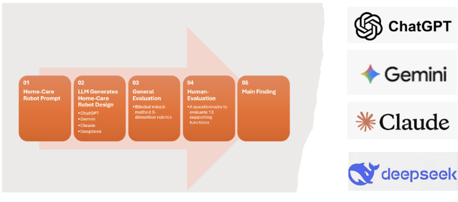

Can AI Design Responsible Home-Care Robots? A Comparative Evaluation of ChatGPT, Gemini, Claude, and DeepSeek
November 5, 2026

I've always been fascinated by how technology can solve real-world problems. Whether I'm programming a robot to navigate a competition field or exploring machine-learning capabilities, I enjoy the challenge of turning ideas into something tangible.
As AI continues to develop, I started wondering: Could AI help design home-care robots that allow older adults to live safely and independently at home? Many older adults need support with medication management, mobility, meal preparation, household tasks, and emergency response. At the same time, caregiver shortages and rising healthcare costs make continuous human support increasingly difficult.
That question inspired a research project comparing ChatGPT, Claude, Gemini, and DeepSeek to see how effectively they could propose realistic home-care robots for older adults.
Why This Matters
Large language models can turn a text prompt into detailed engineering concepts, system architectures, safety procedures, and product specifications. But an impressive-looking proposal is not necessarily safe, practical, affordable, or appropriate for the people who would use it.
In home-care robotics, mistakes can have serious consequences. A robot that monitors falls, supports mobility, or manages medication must prioritize safety, privacy, dignity, and human oversight. Evaluating these designs therefore requires more than measuring technical sophistication.
The Challenge
I gave each model the same prompt: design a technically realistic home-care robot for older adults living independently or semi-independently. The robot could support medication and hydration reminders, scheduling, grocery management, housekeeping, social connection, emergency response, and communication with caregivers.
Each model was also asked to prioritize safety, accessibility, privacy, independence, user consent, and caregiver collaboration. Most importantly, it had to identify tasks that still require human supervision and acknowledge the limits of current technology.
How the Study Worked
The models developed designs for three care scenarios:
The study compared twelve AI-generated designs. I used a structured rubric with five domains, scoring each from 1 to 5. A design could receive a total score from 5 to 25; higher scores indicated stronger performance across the evaluation criteria.
| Domain | What it considers | Score |
|---|---|---|
| Functionality | Fit with older adults' care needs and home routines | 1–5 |
| Safety | Protection against age-related vulnerabilities | 1–5 |
| Dignity | Independence, dignity, and accessible interaction | 1–5 |
| Privacy | Privacy, trust, and caregiver collaboration | 1–5 |
| Sustainability | Real-world feasibility and sustainability | 1–5 |
What the Models Designed
All four models included core ideas such as medication reminders, fall detection, caregiver communication, and social engagement. Their approaches differed in mobility, scope, and design priorities.
Results
In the overall comparison, ChatGPT received the highest average score (23.67 out of 25). Claude and Gemini were close behind, while DeepSeek's average was lower. The scenario scores show that performance also depended on the type of care the design was meant to support.
| Model | Basic support | Comprehensive care | Mobility and safety |
|---|---|---|---|
| ChatGPT | 24 | 22 | 24 |
| Gemini | 22 | 19 | 23 |
| Claude | 23 | 21 | 22 |
| DeepSeek | 17 | 16 | 16 |
ChatGPT had the top score in Basic Support and tied with Gemini in Mobility and Safety. Claude scored consistently across all three scenarios. Gemini was stronger in Basic Support and Mobility and Safety than in Comprehensive Care. DeepSeek received the lowest scenario scores, though its simpler design may offer a more affordable option.
Key Findings
Shared understanding of core needs. All four models identified priorities such as medication support, fall detection, emergency communication, caregiver coordination, and independent living.
Different design philosophies. ChatGPT emphasized day-to-day usefulness; Claude focused on ethics, privacy, and consent; Gemini aimed for a balanced, integrated care partner; and DeepSeek favored simplicity and affordability.
Human support remained essential. Each design described the robot as a supportive assistant working alongside people, rather than a replacement for caregivers, physicians, or emergency responders.
Limitations
This study evaluated written design proposals, not functioning robots, so it measured conceptual quality rather than real-world performance. I also converted the concepts into preliminary 3D CAD models using FreeCAD to explore how the proposals might translate into physical systems. These models were not manufacturing-ready, but they offered another way to consider feasibility and component layout.
Final Thoughts
This project showed me that modern AI models can generate thoughtful concepts for home-care robots and serve as useful partners during early engineering design. It also reinforced that AI alone cannot ensure a solution is safe or effective.
Developing assistive technology that truly helps will require collaboration among engineers, healthcare professionals, caregivers, older adults, and AI systems. Generative AI can help explore possibilities, but human expertise remains essential to make those ideas safe, practical, ethical, and beneficial.
As AI continues to advance, understanding both its strengths and limitations will be critical to shaping the future of assistive technology.
Reference
View the home-care robot design data and code — Harvard Dataverse, Version 1